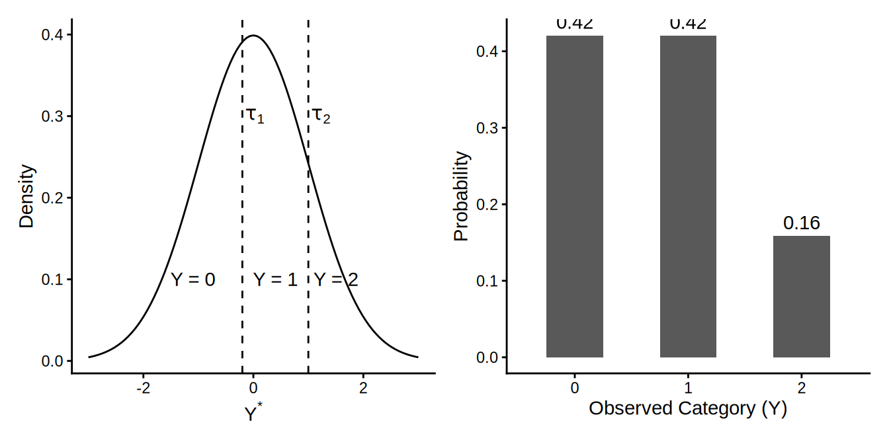

Confirmatory Factor Analysis With Categorical Indicators
The data come from this paper: https://doi.org/10.1111/desc.12918. The authors kindly shared the data on OSF: https://osf.io/hq4xy/overview.
# Download data from OSF
if (!dir.exists(here("data"))) {
dir.create(here("data"))
}
# Raw items
tiego_raw_name <- here("data", "tiego_raw.csv")
if (!file.exists(tiego_raw_name)) {
download.file(
"https://osf.io/download/mtnqj/",
destfile = tiego_raw_name
)
}Load Data
tiego_raw <- read.csv(tiego_raw_name)
# Notice that the minimum is -999 for many variables, so -999 is likely a missing code
# Treat -999 as NA
tiego_raw <- read.csv(tiego_raw_name, na.strings = -999)
# Looks like the CBCL items also have some other missing codes
tiego_raw |>
select(starts_with("CBCLProb")) |>
glimpse()
# Recode 9 to NA as well
tiego_raw <- tiego_raw |>
mutate(across(starts_with("CBCLProb"),
~ ifelse(.x == 9, NA, .x)))The data contain items from CBCL (Child Behavior Checklist). The items are rated on a 3-point scale (0 = not true, 1 = somewhat or sometimes true, 2 = very true or often true), and should not be treated as continuous. We will focus on the 7-item DSM-oriented Attention Deficit/Hyperactivity Problems scale, with the seven items being Items 4, 8, 10, 41, 78, 93, 104.
# Gather the items into a smaller data set
tiego_adhd <- tiego_raw |>
select(
adhd1 = CBCLProb4, # fails to finish
adhd2 = CBCLProb8, # concentrate
adhd3 = CBCLProb10, # sit still
adhd4 = CBCLProb41, # impulsive
adhd5 = CBCLProb78, # inattentive
adhd6 = CBCLProb93, # talk much
adhd7 = CBCLProb104 # loud
) |>
# recode to be ordinal
mutate(
across(
everything(),
~ ordered(.x, levels = c(0, 1, 2),
labels = c("not true", "somewhat or sometimes true",
"very true or often true")),
.names = "{.col}_c"))
datasummary_skim(tiego_adhd[, 8:14]) # check the recoded items| N | % | ||
|---|---|---|---|
| adhd1_c | not true | 56 | 41.2 |
| somewhat or sometimes true | 57 | 41.9 | |
| very true or often true | 21 | 15.4 | |
| adhd2_c | not true | 74 | 54.4 |
| somewhat or sometimes true | 39 | 28.7 | |
| very true or often true | 21 | 15.4 | |
| adhd3_c | not true | 80 | 58.8 |
| somewhat or sometimes true | 41 | 30.1 | |
| very true or often true | 12 | 8.8 | |
| adhd4_c | not true | 80 | 58.8 |
| somewhat or sometimes true | 38 | 27.9 | |
| very true or often true | 15 | 11.0 | |
| adhd5_c | not true | 78 | 57.4 |
| somewhat or sometimes true | 36 | 26.5 | |
| very true or often true | 20 | 14.7 | |
| adhd6_c | not true | 89 | 65.4 |
| somewhat or sometimes true | 35 | 25.7 | |
| very true or often true | 10 | 7.4 | |
| adhd7_c | not true | 103 | 75.7 |
| somewhat or sometimes true | 24 | 17.6 | |
| very true or often true | 6 | 4.4 |
Background on Categorical Data
Many scales in psychology, like the CBCL, use Likert-type response formats (e.g., 0-1-2). Standard CFA using Maximum Likelihood (ML) assumes that the observed variables are:
- Continuous: Can take any value within a range.
- Normally Distributed: Follow a bell curve.
When we have ordinal data with few categories (e.g., fewer than 5), treating them as continuous can lead to:
- Biased parameter estimates (e.g., underestimated factor loadings).
- Incorrect standard errors and \(\chi^2\) statistics.
- Spurious multidimensionality (factors defined by item difficulty rather than content).
Underlying Latent Response Formulation
Instead of analyzing the discrete scores directly (0, 1, 2), we assume that for each observed categorical item \(Y\), there is an underlying, unobserved continuous variable \(Y^*\) (Y-star). The observed score is determined by where \(Y^*\) falls relative to certain thresholds (\(\tau\)):
\[ Y = \begin{cases} 0 & \text{if } Y^* \le \tau_1 \\ 1 & \text{if } \tau_1 < Y^* \le \tau_2 \\ 2 & \text{if } Y^* > \tau_2 \end{cases} \]

Polychoric Correlations
Because we care about the relationships between the underlying latent responses (\(Y^*\)), we estimate the correlations between these \(Y^*\) variables rather than the Pearson correlations of the observed integers. These correlations are called polychoric correlations. They are typically stronger than the Pearson correlations calculated on coarse categorical data.
WLSMV Estimator
For categorical CFA, we typically use the WLSMV (Weighted Least Squares Mean and Variance adjusted) estimator.
- DWLS: The core estimation method is Diagonally Weighted Least Squares (DWLS). Unlike Full WLS which requires the inversion of a massive weight matrix (dimensions increase rapidly with more items), DWLS only uses the diagonal elements of the weight matrix. This makes it much more computationally stable and feasible for larger models and smaller sample sizes.
- MV: It then applies robust corrections to the standard errors and test statistics (like \(\chi^2\)) to account for the fact that the full weight matrix was not used. Specifically, it adjusts both the Mean and Variance of the test statistic distribution.
(Not Recommended) Treating Items as Continuous
fit_cont <- cfa(
" ADHD =~ adhd1 + adhd2 + adhd3 + adhd4 + adhd5 + adhd6 + adhd7 ",
data = tiego_adhd, missing = "fiml", estimator = "MLR"
)Warning: lavaan->lav_data_full():
some cases are empty and will be ignored: 83 132.summary(fit_cont, fit.measures = TRUE, standardized = TRUE)lavaan 0.6-21 ended normally after 32 iterations
Estimator ML
Optimization method NLMINB
Number of model parameters 21
Used Total
Number of observations 134 136
Number of missing patterns 4
Model Test User Model:
Standard Scaled
Test Statistic 61.701 50.338
Degrees of freedom 14 14
P-value (Chi-square) 0.000 0.000
Scaling correction factor 1.226
Yuan-Bentler correction (Mplus variant)
Model Test Baseline Model:
Test statistic 433.846 336.246
Degrees of freedom 21 21
P-value 0.000 0.000
Scaling correction factor 1.290
User Model versus Baseline Model:
Comparative Fit Index (CFI) 0.884 0.885
Tucker-Lewis Index (TLI) 0.827 0.827
Robust Comparative Fit Index (CFI) 0.889
Robust Tucker-Lewis Index (TLI) 0.833
Loglikelihood and Information Criteria:
Loglikelihood user model (H0) -763.251 -763.251
Scaling correction factor 1.143
for the MLR correction
Loglikelihood unrestricted model (H1) -732.400 -732.400
Scaling correction factor 1.176
for the MLR correction
Akaike (AIC) 1568.501 1568.501
Bayesian (BIC) 1629.356 1629.356
Sample-size adjusted Bayesian (SABIC) 1562.928 1562.928
Root Mean Square Error of Approximation:
RMSEA 0.159 0.139
90 Percent confidence interval - lower 0.120 0.103
90 Percent confidence interval - upper 0.201 0.177
P-value H_0: RMSEA <= 0.050 0.000 0.000
P-value H_0: RMSEA >= 0.080 0.999 0.995
Robust RMSEA 0.156
90 Percent confidence interval - lower 0.112
90 Percent confidence interval - upper 0.202
P-value H_0: Robust RMSEA <= 0.050 0.000
P-value H_0: Robust RMSEA >= 0.080 0.997
Standardized Root Mean Square Residual:
SRMR 0.074 0.074
Parameter Estimates:
Standard errors Sandwich
Information bread Observed
Observed information based on Hessian
Latent Variables:
Estimate Std.Err z-value P(>|z|) Std.lv Std.all
ADHD =~
adhd1 1.000 0.481 0.676
adhd2 1.258 0.137 9.218 0.000 0.605 0.814
adhd3 0.794 0.140 5.665 0.000 0.382 0.582
adhd4 1.115 0.165 6.738 0.000 0.536 0.779
adhd5 1.354 0.154 8.819 0.000 0.651 0.883
adhd6 0.640 0.172 3.724 0.000 0.308 0.492
adhd7 0.522 0.158 3.300 0.001 0.251 0.468
Intercepts:
Estimate Std.Err z-value P(>|z|) Std.lv Std.all
.adhd1 0.739 0.061 12.018 0.000 0.739 1.038
.adhd2 0.604 0.064 9.414 0.000 0.604 0.813
.adhd3 0.486 0.057 8.570 0.000 0.486 0.741
.adhd4 0.511 0.060 8.581 0.000 0.511 0.742
.adhd5 0.567 0.064 8.902 0.000 0.567 0.769
.adhd6 0.410 0.054 7.596 0.000 0.410 0.656
.adhd7 0.271 0.047 5.831 0.000 0.271 0.506
Variances:
Estimate Std.Err z-value P(>|z|) Std.lv Std.all
.adhd1 0.275 0.039 7.002 0.000 0.275 0.543
.adhd2 0.186 0.034 5.528 0.000 0.186 0.337
.adhd3 0.284 0.045 6.294 0.000 0.284 0.661
.adhd4 0.186 0.034 5.440 0.000 0.186 0.393
.adhd5 0.120 0.029 4.163 0.000 0.120 0.220
.adhd6 0.296 0.041 7.236 0.000 0.296 0.758
.adhd7 0.224 0.033 6.729 0.000 0.224 0.781
ADHD 0.231 0.052 4.451 0.000 1.000 1.000Ordinal CFA
The ordinal CFA approach is based on the polychoric correlations among the items:
psych::polychoric(tiego_adhd[, 1:7])Call: psych::polychoric(x = tiego_adhd[, 1:7])
Polychoric correlations
adhd1 adhd2 adhd3 adhd4 adhd5 adhd6 adhd7
adhd1 1.00
adhd2 0.80 1.00
adhd3 0.46 0.61 1.00
adhd4 0.57 0.72 0.57 1.00
adhd5 0.73 0.86 0.61 0.84 1.00
adhd6 0.33 0.37 0.55 0.60 0.55 1.00
adhd7 0.28 0.42 0.55 0.66 0.48 0.65 1.00
with tau of
1 2
adhd1 -0.21 1.0
adhd2 0.13 1.0
adhd3 0.26 1.3
adhd4 0.26 1.2
adhd5 0.21 1.0
adhd6 0.42 1.4
adhd7 0.75 1.7lavaan 0.6-21 ended normally after 17 iterations
Estimator DWLS
Optimization method NLMINB
Number of model parameters 21
Used Total
Number of observations 131 136
Model Test User Model:
Standard Scaled
Test Statistic 34.438 53.338
Degrees of freedom 14 14
P-value (Unknown) NA 0.000
Scaling correction factor 0.687
Shift parameter 3.194
simple second-order correction
Model Test Baseline Model:
Test statistic 1686.338 1026.339
Degrees of freedom 21 21
P-value NA 0.000
Scaling correction factor 1.656
User Model versus Baseline Model:
Comparative Fit Index (CFI) 0.988 0.961
Tucker-Lewis Index (TLI) 0.982 0.941
Robust Comparative Fit Index (CFI) 0.849
Robust Tucker-Lewis Index (TLI) 0.774
Root Mean Square Error of Approximation:
RMSEA 0.106 0.147
90 Percent confidence interval - lower 0.062 0.106
90 Percent confidence interval - upper 0.151 0.190
P-value H_0: RMSEA <= 0.050 0.022 0.000
P-value H_0: RMSEA >= 0.080 0.847 0.996
Robust RMSEA 0.247
90 Percent confidence interval - lower 0.164
90 Percent confidence interval - upper 0.333
P-value H_0: Robust RMSEA <= 0.050 0.000
P-value H_0: Robust RMSEA >= 0.080 0.999
Standardized Root Mean Square Residual:
SRMR 0.101 0.101
Parameter Estimates:
Parameterization Delta
Standard errors Robust.sem
Information Expected
Information saturated (h1) model Unstructured
Latent Variables:
Estimate Std.Err z-value P(>|z|) Std.lv Std.all
ADHD =~
adhd1_c 1.000 0.772 0.772
adhd2_c 1.178 0.101 11.679 0.000 0.910 0.910
adhd3_c 0.889 0.096 9.300 0.000 0.686 0.686
adhd4_c 1.125 0.089 12.580 0.000 0.868 0.868
adhd5_c 1.213 0.089 13.674 0.000 0.937 0.937
adhd6_c 0.832 0.115 7.256 0.000 0.642 0.642
adhd7_c 0.826 0.116 7.119 0.000 0.638 0.638
Thresholds:
Estimate Std.Err z-value P(>|z|) Std.lv Std.all
adhd1_c|t1 -0.202 0.111 -1.827 0.068 -0.202 -0.202
adhd1_c|t2 0.993 0.132 7.519 0.000 0.993 0.993
adhd2_c|t1 0.144 0.110 1.305 0.192 0.144 0.144
adhd2_c|t2 0.993 0.132 7.519 0.000 0.993 0.993
adhd3_c|t1 0.281 0.112 2.521 0.012 0.281 0.281
adhd3_c|t2 1.331 0.154 8.655 0.000 1.331 1.331
adhd4_c|t1 0.242 0.111 2.174 0.030 0.242 0.242
adhd4_c|t2 1.203 0.144 8.335 0.000 1.203 1.203
adhd5_c|t1 0.202 0.111 1.827 0.068 0.202 0.202
adhd5_c|t2 1.025 0.134 7.666 0.000 1.025 1.025
adhd6_c|t1 0.403 0.113 3.558 0.000 0.403 0.403
adhd6_c|t2 1.430 0.162 8.811 0.000 1.430 1.430
adhd7_c|t1 0.742 0.122 6.100 0.000 0.742 0.742
adhd7_c|t2 1.687 0.191 8.846 0.000 1.687 1.687
Variances:
Estimate Std.Err z-value P(>|z|) Std.lv Std.all
.adhd1_c 0.404 0.404 0.404
.adhd2_c 0.173 0.173 0.173
.adhd3_c 0.529 0.529 0.529
.adhd4_c 0.246 0.246 0.246
.adhd5_c 0.123 0.123 0.123
.adhd6_c 0.587 0.587 0.587
.adhd7_c 0.593 0.593 0.593
ADHD 0.596 0.081 7.396 0.000 1.000 1.000The fit indices are different from those in the continuous CFA, and does not appear adequate. We can check the residuals and modification indices to see where the model misfits.
resid(fit_ord, type = "cor.bentler")$cov adhd1_ adhd2_ adhd3_ adhd4_ adhd5_ adhd6_ adhd7_
adhd1_c 0.000
adhd2_c 0.097 0.000
adhd3_c -0.071 -0.018 0.000
adhd4_c -0.100 -0.069 -0.019 0.000
adhd5_c 0.003 0.008 -0.024 0.029 0.000
adhd6_c -0.162 -0.209 0.119 0.034 -0.051 0.000
adhd7_c -0.210 -0.156 0.118 0.105 -0.119 0.240 0.000modindices(fit_ord, sort. = TRUE, minimum.value = 10)Updated Models
- Add unique covariance between
adhd1_candadhd2_cand between adhd6_c and adhd7_c based on modification indices.
When adding unique covariances, make sure they make theoretical sense. Also, avoid adding too many unique covariances post hoc.
lavaan 0.6-21 ended normally after 21 iterations
Estimator DWLS
Optimization method NLMINB
Number of model parameters 23
Used Total
Number of observations 131 136
Model Test User Model:
Standard Scaled
Test Statistic 14.788 27.170
Degrees of freedom 12 12
P-value (Unknown) NA 0.007
Scaling correction factor 0.604
Shift parameter 2.673
simple second-order correction
Model Test Baseline Model:
Test statistic 1686.338 1026.339
Degrees of freedom 21 21
P-value NA 0.000
Scaling correction factor 1.656
User Model versus Baseline Model:
Comparative Fit Index (CFI) 0.998 0.985
Tucker-Lewis Index (TLI) 0.997 0.974
Robust Comparative Fit Index (CFI) 0.938
Robust Tucker-Lewis Index (TLI) 0.891
Root Mean Square Error of Approximation:
RMSEA 0.042 0.099
90 Percent confidence interval - lower 0.000 0.049
90 Percent confidence interval - upper 0.104 0.148
P-value H_0: RMSEA <= 0.050 0.521 0.053
P-value H_0: RMSEA >= 0.080 0.186 0.762
Robust RMSEA 0.171
90 Percent confidence interval - lower 0.055
90 Percent confidence interval - upper 0.276
P-value H_0: Robust RMSEA <= 0.050 0.045
P-value H_0: Robust RMSEA >= 0.080 0.918
Standardized Root Mean Square Residual:
SRMR 0.067 0.067
Parameter Estimates:
Parameterization Delta
Standard errors Robust.sem
Information Expected
Information saturated (h1) model Unstructured
Latent Variables:
Estimate Std.Err z-value P(>|z|) Std.lv Std.all
ADHD =~
adhd1_c 1.000 0.670 0.670
adhd2_c 1.260 0.126 9.991 0.000 0.844 0.844
adhd3_c 1.053 0.125 8.394 0.000 0.706 0.706
adhd4_c 1.316 0.134 9.848 0.000 0.882 0.882
adhd5_c 1.451 0.155 9.375 0.000 0.973 0.973
adhd6_c 0.896 0.146 6.142 0.000 0.601 0.601
adhd7_c 0.897 0.156 5.766 0.000 0.601 0.601
Covariances:
Estimate Std.Err z-value P(>|z|) Std.lv Std.all
.adhd1_c ~~
.adhd2_c 0.234 0.066 3.551 0.000 0.234 0.588
.adhd6_c ~~
.adhd7_c 0.289 0.097 2.975 0.003 0.289 0.452
Thresholds:
Estimate Std.Err z-value P(>|z|) Std.lv Std.all
adhd1_c|t1 -0.202 0.111 -1.827 0.068 -0.202 -0.202
adhd1_c|t2 0.993 0.132 7.519 0.000 0.993 0.993
adhd2_c|t1 0.144 0.110 1.305 0.192 0.144 0.144
adhd2_c|t2 0.993 0.132 7.519 0.000 0.993 0.993
adhd3_c|t1 0.281 0.112 2.521 0.012 0.281 0.281
adhd3_c|t2 1.331 0.154 8.655 0.000 1.331 1.331
adhd4_c|t1 0.242 0.111 2.174 0.030 0.242 0.242
adhd4_c|t2 1.203 0.144 8.335 0.000 1.203 1.203
adhd5_c|t1 0.202 0.111 1.827 0.068 0.202 0.202
adhd5_c|t2 1.025 0.134 7.666 0.000 1.025 1.025
adhd6_c|t1 0.403 0.113 3.558 0.000 0.403 0.403
adhd6_c|t2 1.430 0.162 8.811 0.000 1.430 1.430
adhd7_c|t1 0.742 0.122 6.100 0.000 0.742 0.742
adhd7_c|t2 1.687 0.191 8.846 0.000 1.687 1.687
Variances:
Estimate Std.Err z-value P(>|z|) Std.lv Std.all
.adhd1_c 0.551 0.551 0.551
.adhd2_c 0.287 0.287 0.287
.adhd3_c 0.502 0.502 0.502
.adhd4_c 0.222 0.222 0.222
.adhd5_c 0.054 0.054 0.054
.adhd6_c 0.639 0.639 0.639
.adhd7_c 0.639 0.639 0.639
ADHD 0.449 0.089 5.037 0.000 1.000 1.000